Case C: Understanding spatial distribution
This case study focuses on using graphics to convey information about spatial distribution of one or more variables.
Most of the examples are going to be using choropleth maps, or visualizations of areal geographic units are shaded different hues to convey the units’ levels on a variable. These could be adminsitrative units like census tracts, or standardized units like square or hex cells for raster data.
We will talk a bit about visualizing point data a little just to give some examples, but the reason for focusing on choropleths more than other spatial data visualizations is because often the degree of simplication offered by the choropleth map strikes the right balance between how much information we covey and how much ink we use.
They are also one of those types of visualizations that everybody and there mother has seen before, like bar and line charts, and this ubiquity is relevant to its utility and currency for the purpose of visualizing spatial distribution that we’re exploring in this case study.
Motvation: how can we investigate and convey spatial clustering
Chorpleth maps aren’t guaranteed to be effective though, and so this is a case where being thoughtful about how the plot is constructed is salient to defining whether or not readers glean the takeaway that’s intended.
How we use color, labels and small multiples are all potentially relevant to whether or not we can convey data trends that may involve multiple variables or contrasts between subgroups.
Where we’re going
We’ll go through a number of examples focused around three use cases:
- basic maps for exploration where we don’t need polish
- cleaned up maps for displaying a single variable’s spatial distribution
- cleaned up maps for displaying two variables’ distribution
Setup
Software dependencies
library(tidyverse) #dplyr, gggplot2
library(sf) #spatial objects and functions for R
library(tigris) #query tiger line data from Census
library(ggspatial) #download basemaps
library(biscale) #bivariate mapping
library(cowplot) #dependency for biscale
library(ggpattern) #needed for hatching choroplethsData
Scraped rental listings
The data for this case study come from a broader project aimed at scraping rental housing platforms across the United States. Given the nature of a topic like this, exploring and describing variations in these data across space are both salient goals.
#load the listing extract for Seattle
listings <- read_csv("./data/seattle-metro-listing-sample.csv")## Rows: 65236 Columns: 8
## ── Column specification ────────────────────────────────────────────────────────
## Delimiter: ","
## chr (1): source
## dbl (5): beds, rent, sqft, lat, lng
## lgl (1): below_fmr
## date (1): date
##
## ℹ Use `spec()` to retrieve the full column specification for this data.
## ℹ Specify the column types or set `show_col_types = FALSE` to quiet this message.#inspect the table
glimpse(listings)## Rows: 65,236
## Columns: 8
## $ source <chr> "Craigslist", "Craigslist", "Craigslist", "Craigslist", "Cra…
## $ date <date> 2021-04-13, 2021-04-13, 2021-04-13, 2021-04-13, 2021-04-13,…
## $ beds <dbl> 1, 1, 3, 1, 0, 1, 1, 3, 0, 1, 2, 1, 0, 1, 1, 1, 2, 0, 1, 2, …
## $ rent <dbl> 1710, 1685, 3300, 1570, 1399, 1500, 455, 3995, 982, 1575, 29…
## $ sqft <dbl> 910, 920, 1317, 900, 674, 235, NA, 1641, 188, 528, 885, 680,…
## $ lat <dbl> 47.467, 47.467, 47.606, 47.467, 47.853, 47.669, 47.928, 47.6…
## $ lng <dbl> -122.206, -122.206, -122.305, -122.206, -122.259, -122.100, …
## $ below_fmr <lgl> FALSE, FALSE, FALSE, TRUE, TRUE, TRUE, TRUE, FALSE, TRUE, TR…#look at the source identifier
table(listings$source)##
## Craigslist GoSection8
## 64272 964The CSV we load is flat tabular data that happens to contain spatial information. It is not already an sf, or simple features object, so we need to coerce it to be one in order for R to treat the data as having a spatial component.
Our data have latitude and longitude values according to a WGS 84 ellipsoid, so we use st_as_sf() for coercing our data to sf and then we use st_set_crs() to associate the coordinate reference system with the geometry.
#coerce to sf, assign the starting coordinates CRS, transform to common mapping projection
listings <- listings %>%
st_as_sf(coords = c("lng", "lat"), remove = FALSE) %>%
st_set_crs("EPSG:4326") %>%
st_transform("EPSG:32610") #UTM zone 10
#inspect the result
glimpse(listings)## Rows: 65,236
## Columns: 9
## $ source <chr> "Craigslist", "Craigslist", "Craigslist", "Craigslist", "Cra…
## $ date <date> 2021-04-13, 2021-04-13, 2021-04-13, 2021-04-13, 2021-04-13,…
## $ beds <dbl> 1, 1, 3, 1, 0, 1, 1, 3, 0, 1, 2, 1, 0, 1, 1, 1, 2, 0, 1, 2, …
## $ rent <dbl> 1710, 1685, 3300, 1570, 1399, 1500, 455, 3995, 982, 1575, 29…
## $ sqft <dbl> 910, 920, 1317, 900, 674, 235, NA, 1641, 188, 528, 885, 680,…
## $ lat <dbl> 47.467, 47.467, 47.606, 47.467, 47.853, 47.669, 47.928, 47.6…
## $ lng <dbl> -122.206, -122.206, -122.305, -122.206, -122.259, -122.100, …
## $ below_fmr <lgl> FALSE, FALSE, FALSE, TRUE, TRUE, TRUE, TRUE, FALSE, TRUE, TR…
## $ geometry <POINT [m]> POINT (559836.2 5257368), POINT (559836.2 5257368), PO…#plot a subset of the geometry to get a sense of what this column captures
plot(listings$geometry[1:1000])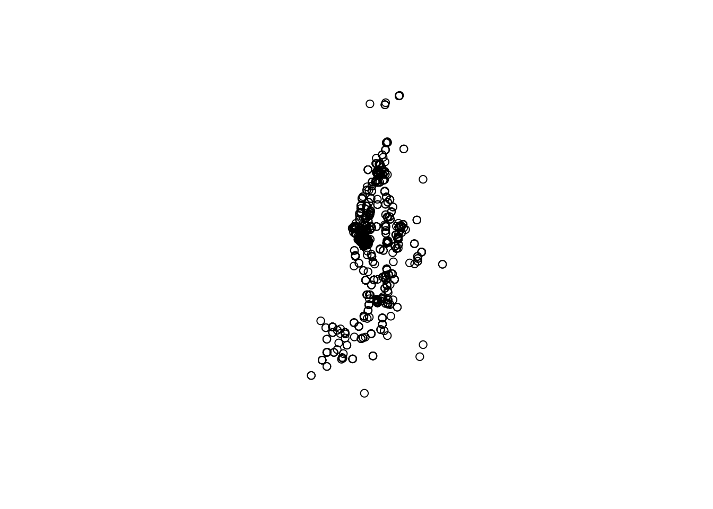
Tract polygons
The tigris library is a valuable resource if you need TIGER line based spatial data for units like census tracts.
One benefit to NHGIS shapefiles historically has been that they prefilter area that is just water from data like the census tract data we are obtaining for Washington State. As long as we use erase_water() from tigris, though, we’ll get to more or less the same place.
#query spatial data, trim columns, filter to Seattle, project to listings' CRS, erase water
tract <- tracts(state = "WA", cb = FALSE) %>%
select(STATEFP, COUNTYFP, TRACTCE, GEOID, geometry) %>%
filter(COUNTYFP %in% c("033", "053", "061")) %>%
st_transform(st_crs(listings)) %>%
erase_water(area_threshold = .90)We can then do a spatial intersection of our listing point data with the tract polygon data in order to append identifiers we can use for small area (i.e. census tract) summaries.
#point in polygon intersection of listing data with tract shapefile
listings <- st_join(listings, tract) Now we’ll use a slightly long pipe to assemble a sf with tract summaries of the Craigslist and GoSection8 listing samples. I’ve exploded the pipe a little bit to add notes
#this pipe makes tract summaries of the listing data
tract_sum <- listings %>%
#dplyr assumes we want to aggregate the geometry too if its present, so drop the point geometry
st_drop_geometry() %>%
#group by tract and source, summarize the number of listings we scraped and the median rent
group_by(GEOID, source) %>%
summarize(n = n(),
med_rent = median(rent, na.rm = TRUE)) %>%
ungroup() %>%
#now do a little manipulation so we can pivot wider by source
mutate(source = ifelse(source == "Craigslist", "cl", "gos8"),
med_rent = ifelse(n < 5, NA, med_rent)) %>%
pivot_wider(id_cols = GEOID, names_from = source, values_from = c(n, med_rent)) %>%
#then join the _tract_ geometry onto our working obj by tract ID
left_join(tract, .) %>%
#finally, make a few modifications to the tract summary columns
mutate_at(vars(starts_with("n")), ~ ifelse(is.na(.), 0, .))## `summarise()` has grouped output by 'GEOID'. You can override using the
## `.groups` argument.
## Joining, by = "GEOID"#inspect the result
glimpse(tract_sum)## Rows: 860
## Columns: 9
## $ STATEFP <chr> "53", "53", "53", "53", "53", "53", "53", "53", "53", "5…
## $ COUNTYFP <chr> "053", "053", "053", "053", "053", "033", "033", "033", …
## $ TRACTCE <chr> "072309", "072311", "072407", "072408", "072409", "00530…
## $ GEOID <chr> "53053072309", "53053072311", "53053072407", "5305307240…
## $ n_cl <dbl> 262, 17, 114, 13, 0, 165, 7, 2, 4, 1, 9, 105, 9, 31, 20,…
## $ n_gos8 <dbl> 1, 1, 0, 0, 0, 1, 0, 0, 0, 0, 1, 3, 0, 1, 0, 0, 1, 0, 0,…
## $ med_rent_cl <dbl> 1539.5, 1375.0, 1697.0, 2200.0, NA, 1293.0, 3000.0, NA, …
## $ med_rent_gos8 <dbl> NA, NA, NA, NA, NA, NA, NA, NA, NA, NA, NA, NA, NA, NA, …
## $ geometry <GEOMETRY [m]> POLYGON ((533438.2 5232233,..., POLYGON ((53504…Exploratory spatial data analysis (ESDA)
One of the most common uses of spatial data visualization in my experience is at the stage of data exploration. These graphics may be just for our own edification, but by plotting variables of interest spatially we can understand the extent to which there are interesting or even problematic degrees of spatial clustering. Whereas the interesting patterns might be revealed through exploring how novel measures are distributed across neighborhoods, problematic clustering would more in the realm of regression residual clustering across spatial units.
With spatial data in R, we can quickly write pipes to plot our data across space.
tract_sum %>%
select(med_rent_cl) %>%
plot()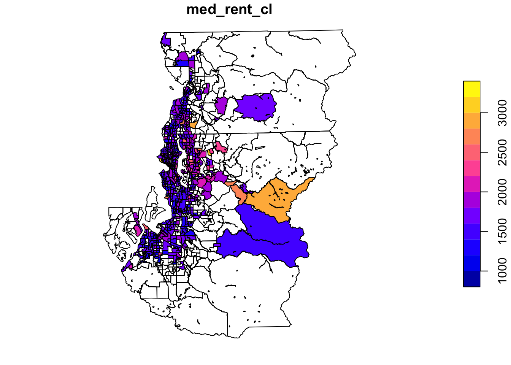
You can start fiddling with the graphic settings within plot() if you are a fan of base graphics:
tract_sum %>%
select(med_rent_cl) %>%
plot(key.pos = 1, lwd = .1, main = "I'm a slightly more legible map of median rents")
Exploring areal data using ggplot()
But honestly, I find that for anything beyond the first sans-argument plot() map, it’s easier to just build out ggplot() code since I’m more familiar with the API.
As you can see from the map below, the default ggplot using geom_sf() leaves room for improvement. Some things are a bit unnecessary (grid, coordinate labels) and other things can just be finessed to a bit nicer form (legend, color usage). This means there are some mapping-specific customizations we’ll want to make, and thankfully nothing is really outside of normal ggplot helper functions you may already be aware of.
ggplot(tract_sum, aes(fill = med_rent_cl)) +
geom_sf()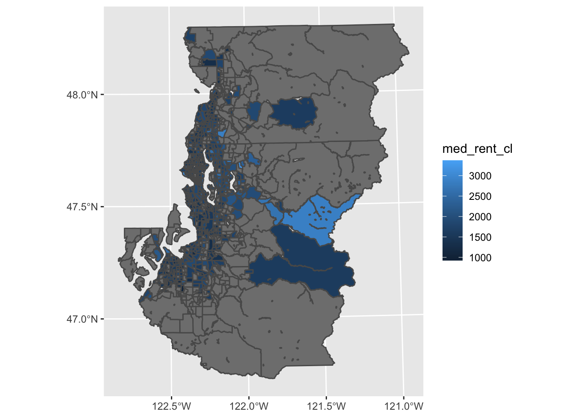
Just removing or substantially reducing the boundary lines can be enough to make a figure useful enough for exploratory purposes in many cases. We can also make the NA value lighter so that our missing value cases are perceived as background to a greater degree.
ggplot(tract_sum, aes(fill = med_rent_cl)) +
geom_sf(color = NA) +
scale_fill_continuous(na.value = "gray80")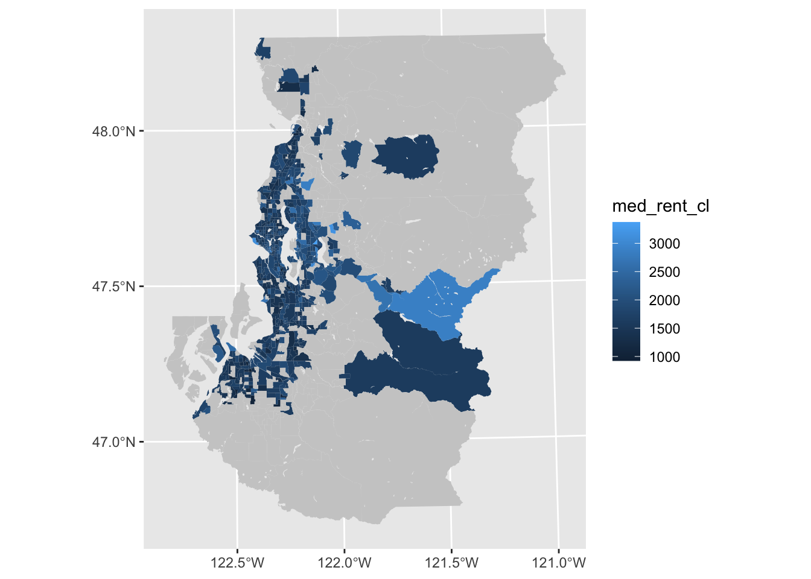
Exploring point data using ggplot()
We can use point data with ggplot much the same. geom_sf() handles point and polygon data interchangeably.
ggplot(listings, aes(color = source)) +
geom_sf()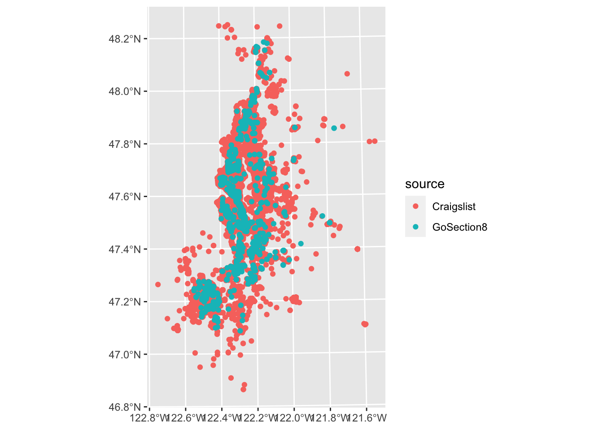
In this case, we can’t really discern much from the Craigslist points throughout much of the region since they overlap. We can improve this a little by making our points smaller, but a more sophisticated approach to summarizing point density would be to use 2D kernel density estimation or something akin to this.
ggplot(listings, aes(color = source)) +
geom_sf(size = .1)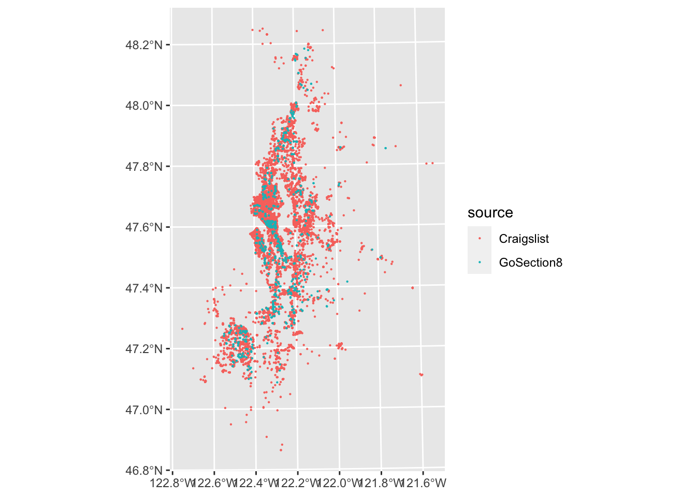
We also may want a basemap for some of our investigative visualizations, particularly if the data are point geometries or an unfamiliar region.
R used to have an excellent library for this, ggmap, but due to changes in Google’s geocoding API over time it’s become a bit cumbersome to use, especially if you’re not going to be using the result for some finalized output. Thankfully, you can use ggspatial’s annotation_map_tile() to add an OpenStreetMaps basemap to a ggplot without much hassle.
#plot the listings as small multiples according to source and with a basemap
ggplot(listings, aes(color = source)) +
facet_grid(~ source) +
annotation_map_tile(zoom = 9) +
geom_sf(size = .05)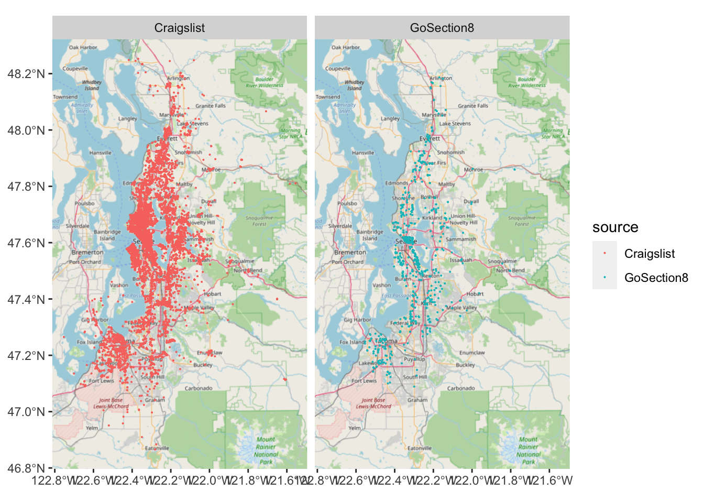
Single variable maps
If you want to start polishing up something of interest, it can be useful to 1) tweak the scale, 2) remove unnecessary theme elements and 3) label the choropleth’s legend. You can go full cartographer and add a map scale and compass rose if you’d like, but YMMV in how essential this is at the publication stage. Ultimately, there’s no one size fits all approach and so this section is organized around guidelines for maps rather than hard and fast rules.
We’re going to build the map below because it is fairly clear in describing differences in the number of Craigslist ads that different neighborhoods in Seattle’s King County have. This is for demonstration purposes and so we are going to not try to adjust for how many ads we might expect, like what we’d want for a more serious analysis.
#plot a tidied up map to show what we'll aim to produce
ggplot(tract_sum %>% filter(COUNTYFP == "033"), aes(fill = log10(n_cl))) +
geom_sf(color = NA) +
scale_fill_viridis_b(breaks = 1:3, labels = 10^(1:3), na.value = "gray80") +
theme_void() +
theme(legend.text = element_text(angle = 45, hjust = 1, vjust = 1),
legend.position = "bottom",
legend.key.height = unit(.1, "in"),
legend.key.width = unit(.5, "in")) +
labs(fill = "N Craigslist Ads")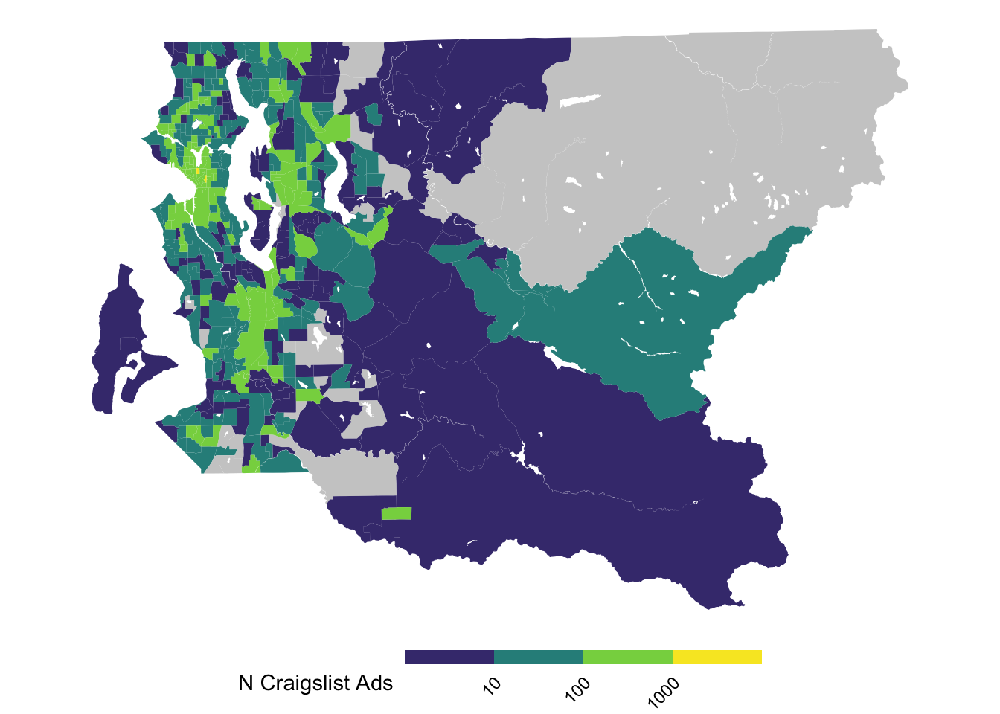
Guideline 1: consider alternative color scales and transformations
One of the first things to consider with plotting choropleths is whether the scaling of the variable and the color palette are suitable for the task at hand.
In the case of trying to plot variables with strong skew, like in the present case with listing frequency by tract, you’re especially likely to find that default plotting options do not work well. Here, there are a handful tracts in Seattle and a few other areas with a very high number of ads due to the greater prevalence of multifamiliy housing in these areas.
#this is not very useful
ggplot(tract_sum, aes(fill = n_cl)) +
geom_sf(color = NA) 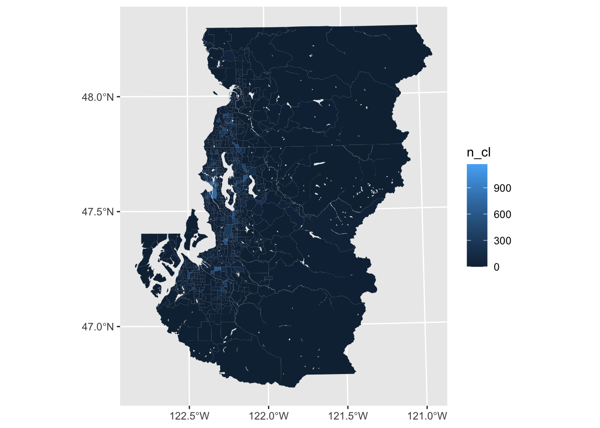
Divergent palettes
Sometimes looking at a centered variable with a fill aesthetic that uses contrasting hues for positive and negative values (provided by scale_fill_gradient2()) can be useful for spotting clustering when doing this sort of investigation. In this case, we can see neighborhoods shaded purple and orange based on whether they are respectively above or below the median rent observed across the entire metro area.
This divergent color scaling is not super useful here, but exploring the data in this manner can help identify clustering of cases that are consistently above or below the average, or some other meaningful value.
ggplot(tract_sum, aes(fill = med_rent_cl)) +
geom_sf(color = NA) +
scale_fill_gradient2(midpoint = median(listings$rent[listings$source == "Craigslist"], na.rm = TRUE))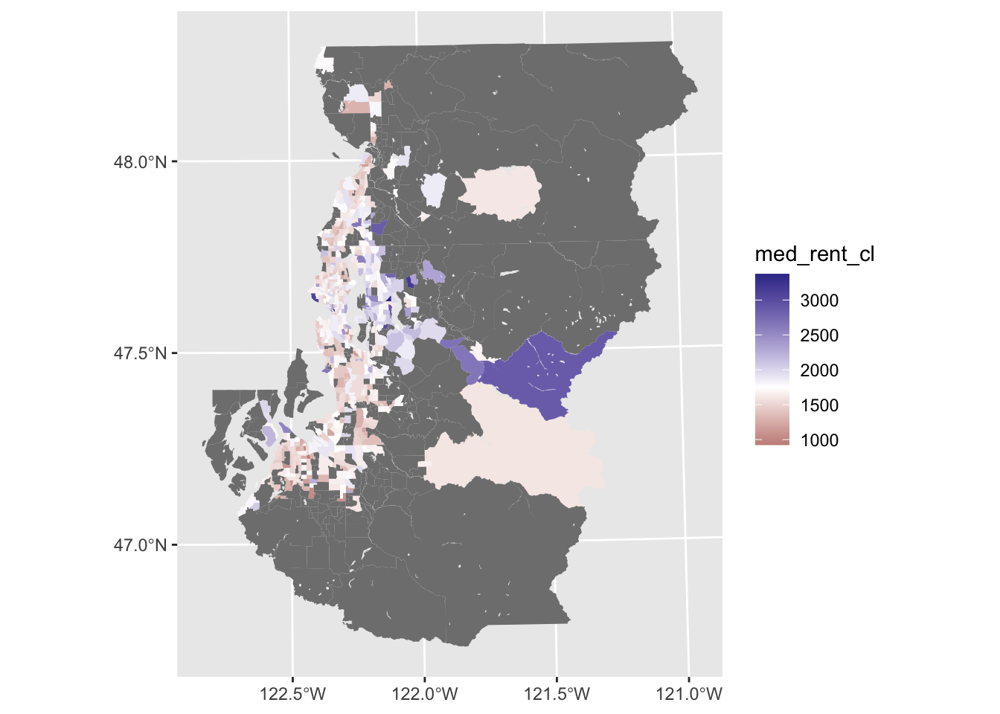
Scale transformations
If you are trying to describe order of magnitude differences, a logarithmic transformation can be very useful. While logging by base \(e\) is common in the context of regression, logging with base 10 (e.g., log10()) can sometimes be particularly intuitive for describing differences in magnitude in the contexxt of a visualization.
We lose the 0 value cases without doing anything else beyond the transformation (e.g., add one or some small amount to each case), but the result is a variable scaling where there are more discernable variations.
ggplot(tract_sum, aes(fill = log10(n_cl))) +
geom_sf(color = NA) +
scale_fill_viridis_c(na.value = "gray80")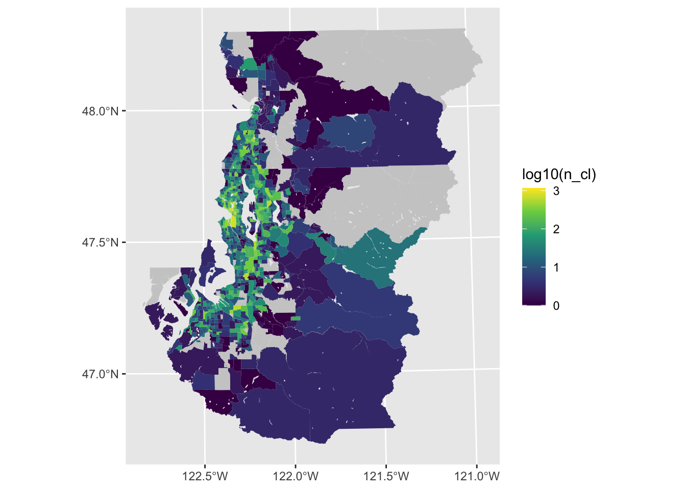
Binning and classification
Furthermore, it can be very helpful to use binned or classified values to reduce the potential gradations in the color palette to a number that is more obviously discerned from each other (e.g., 4-6). If perceiving precise differences is the goal, then it is fairly essential to collapse continuous measures into some type of binned measure.
ggplot(tract_sum, aes(fill = log10(n_cl))) +
geom_sf(color = NA) +
scale_fill_viridis_b(na.value = "gray80") There are other ways to incorporate jenks (natural), quantile and equal interval breaks using the classInt library. The general idea is to use functions from this library to generate new classified variables that can then be visualized with scale_fill_discrete(), scale_fill_brewer() or scale_vill_viridis_d().
Guideline 2: label your legend appropriately
We can make the legend labels a little clearer than what ggplot provides by default through mapping exponentiated values to the labels that are used in the legend. It helps to set the breaks and labels in a manner like the following since ggplot will throw errors if these arguemnt values aren’t the same length.
ggplot(tract_sum, aes(fill = log10(n_cl))) +
geom_sf(color = NA) +
scale_fill_viridis_b(breaks = 1:3, labels = 10^(1:3), na.value = "gray80") 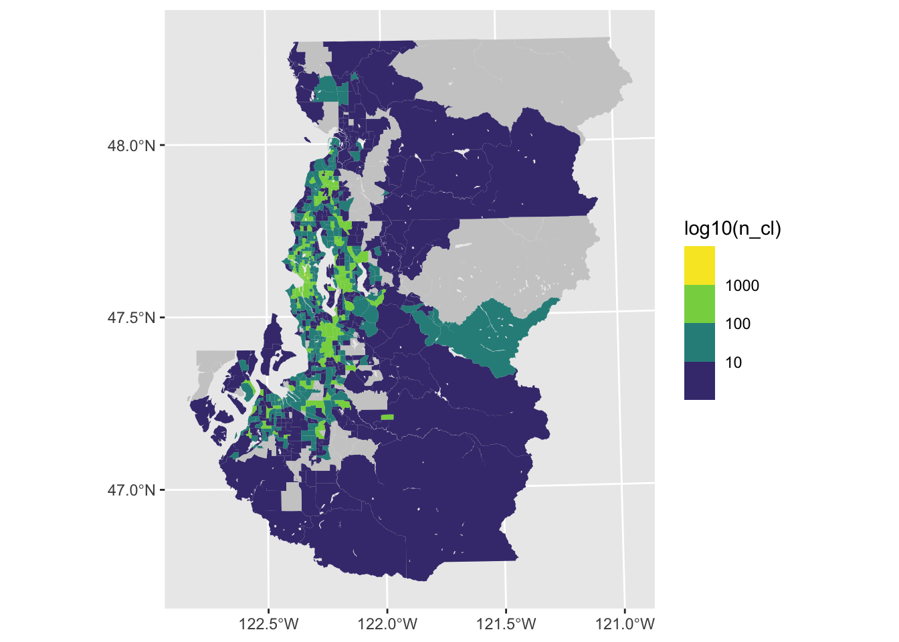
Guideline 3: remove mapping elements that use ink but contribute little information to the empirical narrative
ggplot(tract_sum, aes(fill = log10(n_cl))) +
geom_sf(color = NA) +
scale_fill_viridis_b(breaks = 1:3, labels = 10^(1:3), na.value = "gray80") +
theme_bw()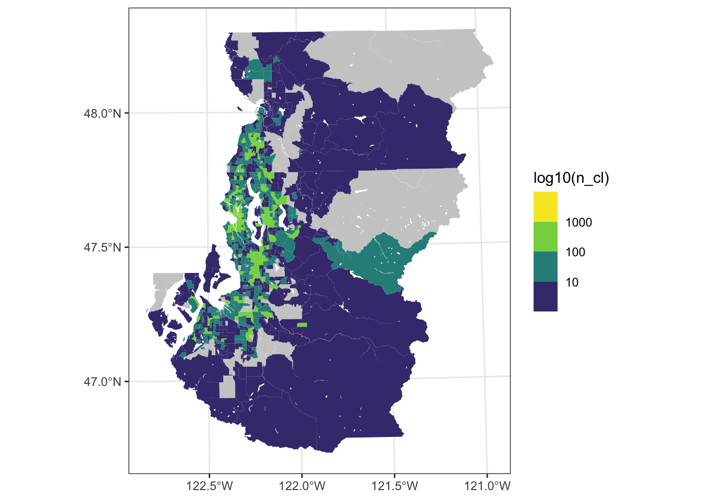
(A Sometimes) Guideline 4: only bite off as much as you can chew (or: take it easy on your readers eyes)
The more limited your space is or the small your data’s geographic units are, the more you ought to try to filter to views that may be more digestible so that each unit can be a meaningful size.
ggplot(tract_sum, aes(fill = log10(n_cl))) +
geom_sf(color = NA) +
scale_fill_viridis_b(breaks = 1:3, labels = 10^(1:3), na.value = "gray80") +
theme_void() +
theme(legend.text = element_text(angle = 45, hjust = 1, vjust = 1),
legend.position = "bottom",
legend.key.height = unit(.1, "in"),
legend.key.width = unit(.5, "in")) +
labs(fill = "Craigslist N")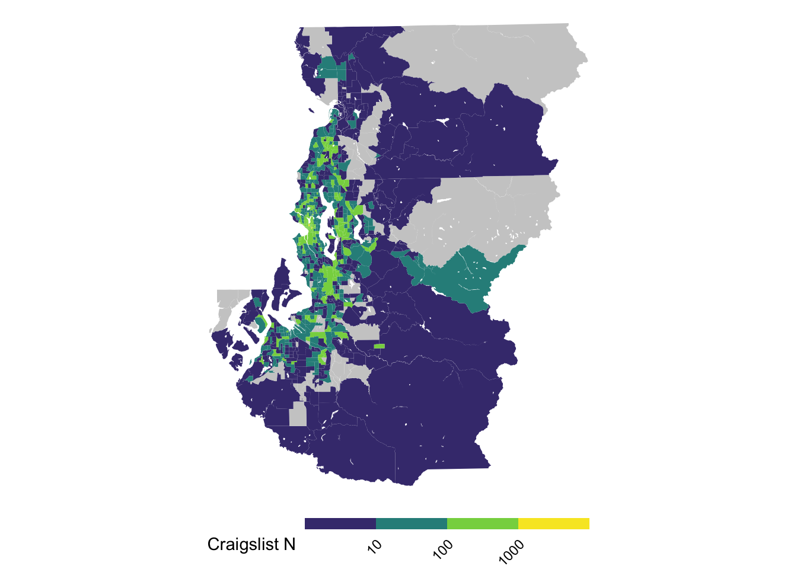
Sometimes showing a subset of the broader study region can provide a more interpretable density of information within the map. Then the other area that is omitted in this figure can be displayed in other figures, whether they are provided in the main text or as supplement.
ggplot(tract_sum %>% filter(COUNTYFP == "033"),
aes(fill = log10(n_cl))) +
geom_sf(color = NA) +
scale_fill_viridis_b(breaks = 1:3, labels = 10^(1:3), na.value = "gray80") +
theme_void() +
theme(legend.text = element_text(angle = 45, hjust = 1, vjust = 1),
legend.position = "bottom",
legend.key.height = unit(.1, "in"),
legend.key.width = unit(.5, "in")) +
labs(fill = "Craigslist N")
Bivariate maps
Sometimes it can be very useful to visualize two variables simultaneously. By using the biscale library, this task is made relatively straightforward compared to assembling such a map by hand.
#prep bivariate map data
bi_classes <- bi_class(tract_sum %>% filter(COUNTYFP == "033"),
x = n_cl, y = n_gos8, style = "jenks", dim = 3)
#prep bivariate map legend using the provided function
bi_legend <- bi_legend(pal = "GrPink", dim = 3, size = ,
xlab = "N Craigslist", ylab = "N GoSection8")
#generate bivariate map
bi_map <- ggplot(bi_classes, aes(fill = bi_class)) +
geom_sf(show.legend = FALSE, color = NA) +
bi_scale_fill(pal = "GrPink", dim = 3) +
bi_theme()
#print map by itself
bi_map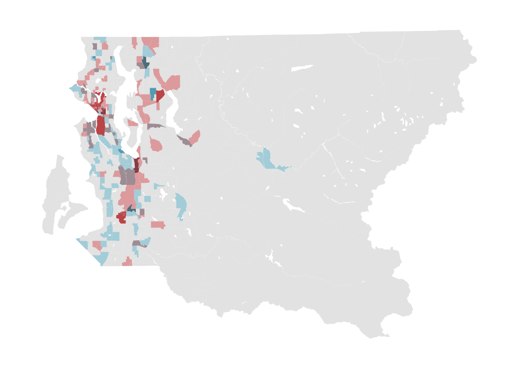
#add legend
ggdraw() +
draw_plot(bi_map, 0, 0, 1, 1) +
draw_plot(bi_legend, 0.65, .15, 0.25, 0.25)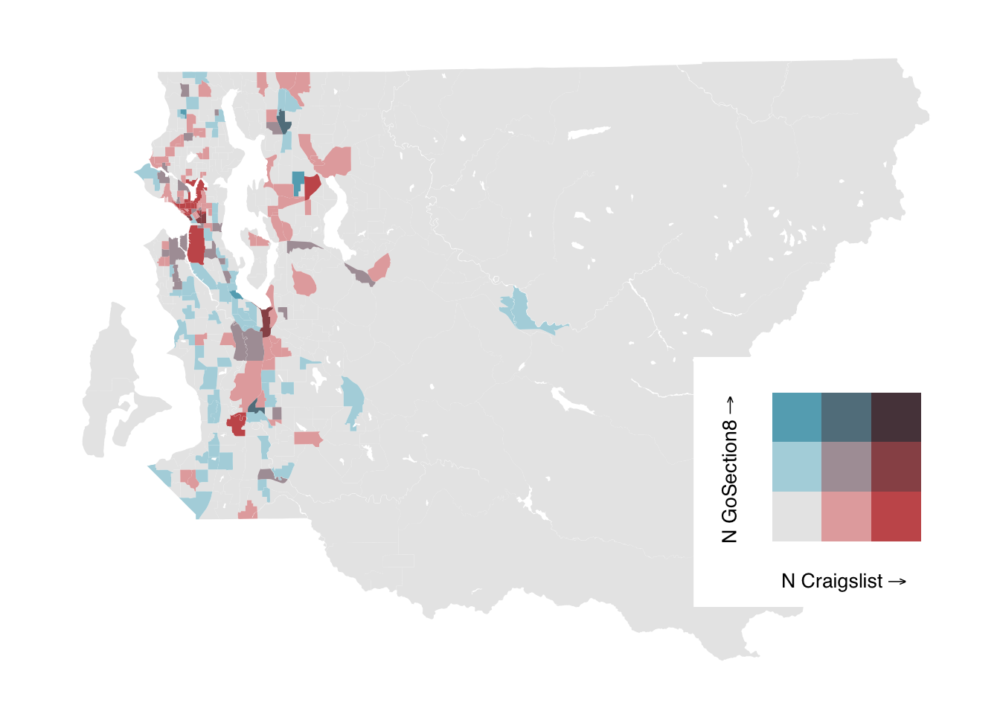
Given the prior points about choosing colors wisely, there are a couple options. Using ggpattern, it’s possible to construct a bivariate map that uses hatching for one of the colors so that it is accessible to readers viewing in a grayscale format still. Takes a lot more effort, but the end result passes inspection when viewed as grayscale.
#make the data we'll use for plotting
bi_classes <- tract_sum %>%
filter(COUNTYFP == "033") %>%
bi_class(x = n_cl, y = n_gos8,
style = "jenks", dim = 3) %>%
mutate(bi_class_1 = str_split_fixed(bi_class, "-", n = 2)[,1],
bi_class_2 = str_split_fixed(bi_class, "-", n = 2)[,2])
#make the map
bi_map <- ggplot() +
geom_sf(data = bi_classes, aes(fill = bi_class_1), color = "gray80", lwd = .2, show.legend = FALSE) +
geom_sf_pattern(data = bi_classes %>% filter(bi_class_2 %in% c("2", "3")) %>%
group_by(bi_class_2) %>% summarize(),
aes(pattern_type = bi_class_2),
pattern = "magick", alpha = 1.0,
pattern_fill = "black", color = NA, fill = NA) +
scale_fill_manual(values = c("white", RColorBrewer::brewer.pal(7, "Greens")[c(3, 5)])) +
scale_pattern_type_discrete(choices = c("right45", "crosshatch45")) +
labs(x = "", y = "") +
guides(fill = "none", pattern_type = "none") +
theme_void() +
theme(plot.title = element_text(hjust = 0.5))
#construct the legend from scatch
leg_grid <- expand_grid(x = 1:3, y = 1:3)
leg_grid <- dplyr::mutate(leg_grid, x = as.factor(x), y = as.factor(y))
bi_legend <- ggplot2::ggplot() +
geom_tile(data = leg_grid,
mapping = aes(x = x, y = y, fill = x),
color = NA) +
geom_tile_pattern(data = leg_grid %>% filter(y %in% c("2", "3")),
mapping = aes(x = x, y = y, pattern_type = y),
pattern = "magick", alpha = 1.0, pattern_scale = 1,
pattern_fill = "black", color = NA, fill = NA) +
ggplot2::labs(x = substitute(paste("N Craigslist","" %->% "")),
y = substitute(paste("N GoSection8", "" %->% ""))) +
scale_fill_manual(values = c("white", RColorBrewer::brewer.pal(7, "Greens")[c(3, 5)])) +
scale_pattern_type_discrete(choices = c("right45", "crosshatch45")) +
bi_theme() +
ggplot2::theme(axis.title = ggplot2::element_text(size = 10)) +
ggplot2::coord_fixed() +
guides(fill = "none", pattern_type = "none")
#make the plot using both plots
ggdraw() +
draw_plot(bi_map, 0, 0, 1, 1) +
draw_plot(bi_legend, 0.65, 0.15, 0.35, 0.35)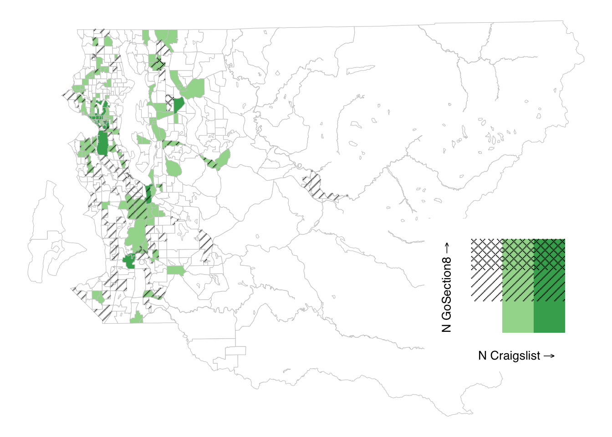
Hands-on: Use the austin data or your own data to make graphics for trends over time.
#load a similar extract of data based on Austin metro area listings
austin <- read_csv("./data/austin-metro-listing-sample.csv")## Rows: 27398 Columns: 8
## ── Column specification ────────────────────────────────────────────────────────
## Delimiter: ","
## chr (1): source
## dbl (5): beds, rent, sqft, lat, lng
## lgl (1): below_fmr
## date (1): date
##
## ℹ Use `spec()` to retrieve the full column specification for this data.
## ℹ Specify the column types or set `show_col_types = FALSE` to quiet this message.#take a look
glimpse(austin)## Rows: 27,398
## Columns: 8
## $ source <chr> "Zillow", "Zillow", "Zillow", "Zillow", "Zillow", "Zillow", …
## $ date <date> 2021-04-09, 2021-04-09, 2021-04-09, 2021-04-09, 2021-04-09,…
## $ beds <dbl> 3, 3, 2, 4, 3, 3, 5, 3, 3, 3, 3, 4, 3, 3, 4, 3, 2, 2, 4, 3, …
## $ rent <dbl> 1720, 1700, 957, 1439, 1850, 1565, 2395, 1550, 1495, 1500, 1…
## $ sqft <dbl> 1665, 1330, 850, 1456, 2140, 1359, 2168, 1051, 1100, 1200, 1…
## $ lat <dbl> 29.836, 29.977, 29.893, 29.920, 29.950, 29.971, 29.820, 29.8…
## $ lng <dbl> -97.933, -97.841, -97.916, -97.889, -97.845, -97.843, -97.93…
## $ below_fmr <lgl> FALSE, FALSE, TRUE, TRUE, FALSE, FALSE, FALSE, FALSE, FALSE,…